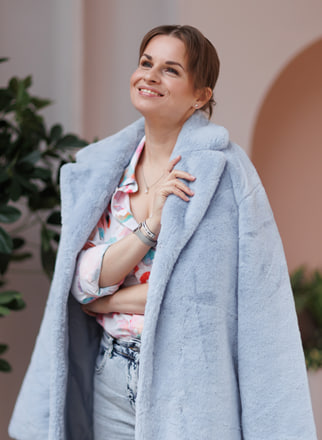
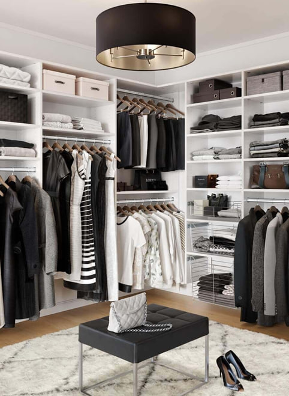
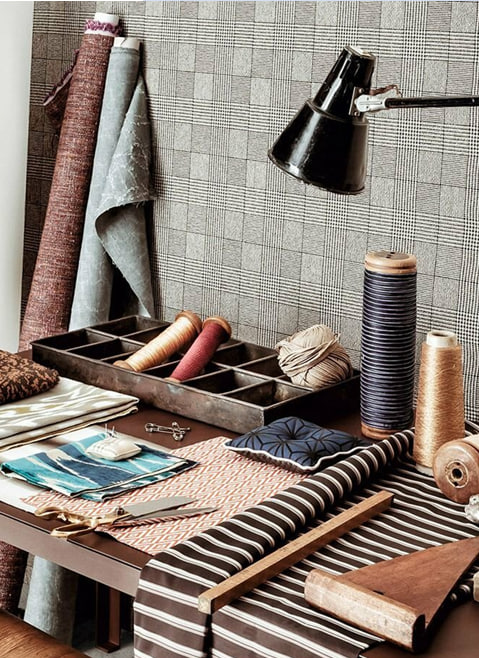
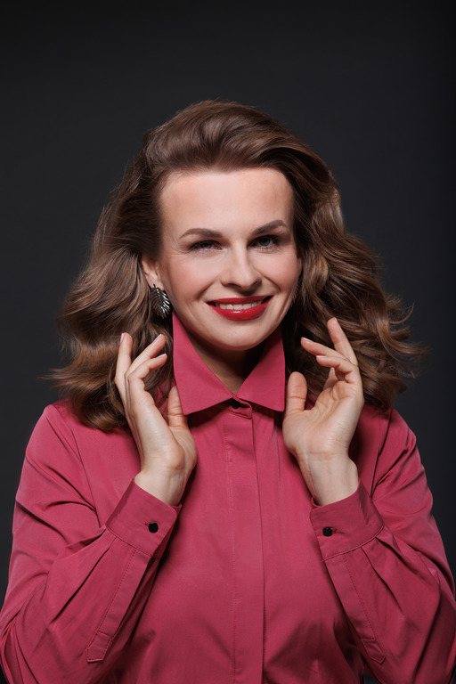

Мои услуги

Персональная консультация по визуалу
-
Запись за 2 недели, необходимо предоставить набор фотографий (конфиденциально), длительность
консультации 1,5ч, на выходе Вы получаете файл-книгу со всей информацией. Стоимость: 10 000 Р.
-
Личная карта стилевых типажей на основе физиогномики (отдельно разбирается лицо, верхняя и нижние
части тела).
-
Подробный разбор личности: свойственные черты характера, сильные, слабые стороны, таланты,
предназначение и развитие, контакты с противоположным полом, возможности идеальной комплекции,
индивидуальные особенности характера и тела, способы развития в личном, деловом, карьерном и
физическом плане.
-
Полная карта по имиджу: колористика, фактуры, ткани, силуэты, формы, масштpабы – для одежды и
аксессуаров.
- План развития нераскрытых граней личности.
Разбор гардероба и составление образов
-
Запись за 1-2 недели, возможен только после персональной консультации по визуалу, длительность от 3ч
(максимально за 1 день 5ч). Стоимость: 15 000 Р (3ч) + 5 000 Р/ч доп. время.
-
Разбор гардероба по типажам личности и составление образов разных граней личности, подробное
объяснение и обучение, как составлять образы самостоятельно.
-
Научимся миксовать разные стилевые типажи в одном образе, максимально раскрывая ваш потенциал и
компетенции через визуал.
-
Разбор гардероба ведется полностью по вашей файл-книге, полученной на персональной консультации по
визуалу – Вы сможете в дальнейшем также опираясь на нее составлять свои успешные образы.
- Составим список необходимых покупок одежды и аксессуаров для завершения всех образов.


Индивидуальный пошив одежды
-
Запись на консультацию к модельеру за 1 неделю, срок пошива от 2 недель, стоимость пошива от 30 000
Р. Подробный прайс и сроки пошива на сайте ателье.
-
Индивидуальный пошив женской и мужской одежды: блузы и рубашки, юбки и брюки, коктейльные и
вечерние, свадебные и корсетные платья, женские и мужские костюмы.
-
Индивидуальная консультация модельера перед пошивом, на которой мы обсудим подробно все детали и
особенности пошива. Подбор материалов для пошива по нашим каталогам или выезд с модельером в лучшие
магазины Москвы.
-
Проведение примерок у вас (дома или в офисе) или в нашем помещении возле м. Раменки, стараемся
экономить ваше время и проводить минимальное количество необходимых примерок, совмещать пошив всех
вещей из вашего заказа.
- Пошив сопровождается полным набором документов, мы ответственны за свою работу. Все наши изделия
имеют пожизненну
Фотосессия стилевых образов
-
Запись за 2-3 недели, возможна только после персональной консультации по визуалу, длительность 3ч.
Стоимость от 50 000 Р, зависит от локации и образов для съемки
-
Основная задача стилевой фотосессии – показать, насколько Вы многогранная личность, как можете
перевоплощаться в абсолютно разные образы, проявляя разные эмоции, но что очень важно - оставаясь
самим собой.
-
Образы для фотосессии составляются на основе файл-книги, полученной после персональной консультации
по визуалу
-
Разбор гардероба ведется полностью по вашей файл-книге, полученной на персональной консультации по
визуалу – Вы сможете в дальнейшем также опираясь на нее составлять свои успешные образы.
- Вся организационная работа включена: подбор студий для съемок, подбор одежды для съемок, фотограф,
стилист (make up и прическа), позинг и помощь на протяжении всей фотосессии, ретушь фото на выходе.
